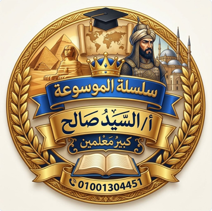

🔒 هذا الدرس محمي بكلمة مرور
الحضارة الرومانية - الصف الثاني الإعدادي
اكتب كلمة المرور التي أعطاها لك أ/ السيد صالح
دخول الدرس
ليس معك كلمة المرور؟
تواصل مع الأستاذ
درس
لعبة
مع أ/ السَّيِّد صَالِح
كبير معلمين • سلسلة الموسوعة
الصَّفُّ الثَّانِي الإِعْدَادِيُّ - الْوَحْدَةُ الرَّابِعَةُ - الدَّرْسُ الثَّانِي: الحَضَارَةُ الرُّومَانِيَّةُ
الدِّرَاسَاتُ الاجْتِمَاعِيَّةُ
رجوع
عنوان اللعبة
1 / 25
الفريق الأول
دوره الآن
0
الفريق الثاني
دوره الآن
0
إجابة صحيحة!
اختر طريقة اللعب
في كل مرة تظهر ٢٠ سؤالًا مختلفة بشكل عشوائي
👤
لعب فردي
العب وحدك واعرف نتيجتك
🏆
منافسة بين فريقين
شاشة مقسومة • ٣٠ ثانية للسؤال • ترتيب مختلف لكل فريق
اسم الفريق الأول
اسم الفريق الثاني
🚀 ابدأ المنافسة
إلغاء
رجوع
منافسة بين فريقين
⏱️ ٣٠ ثانية لكل سؤال
VS
✍️ اكتب اسمك قبل ما تبدأ
اكتب اسمك ثنائي أو ثلاثي عشان نتيجتك توصل للأستاذ
ابدأ ✅
رجوع